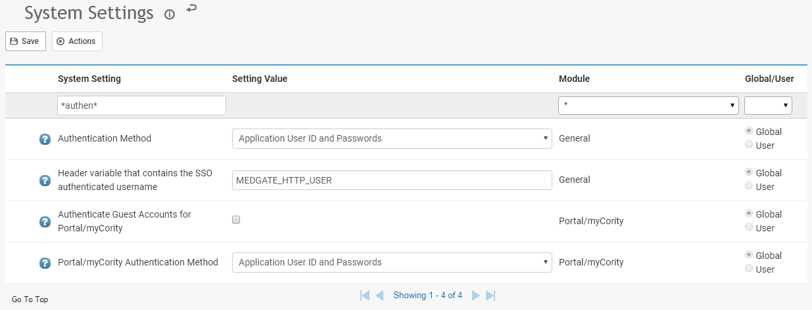

Cority supports the use of SAML (Security Assertion Markup Language) 2.0 for SSO authentication. SAML 2.0 allows for the exchange of authentication and authorization between two security domains, and is used by Cority to allow cross-domain single sign-on.
Cority expects to receive a SAML assertion with the NameID identifying the user attempting to log into Cority. The user must first be set up in Cority with a username that matches the NameID.
To enable SAML 2.0 authentication, the Authentication Method system setting must be set to ‘SSO (SAML 2.0)’.

There are 2 system settings associated with SAML 2.0 authentication.
When an error occurs during an attempted login, the user will be re-directed to this URL if it is populated.
This is the service provider’s private key/certificate, which is used to decrypt the encrypted SAML assertion sent by the identity provider. A passphrase is also entered here when the private key is uploaded.
The identity provider should receive the service provider’s public key.
Cority supports multiple private/public key types. For information about those types, contact your Client Services Consultant.
The URL for logging into Cority through SAML 2.0 is <yourCoritydomain>/security/samllogin.rails. For example, if your Cority URL is https://www.Cority.com/xy, your SAML URL is https://www.Cority.com/xy/security/samllogin.rails.
The URL for logging into Cority Portal through SAML 2.0 is <yourCoritydomain>/security/samllogin.rails?PortalLogin=True. For example, if your Cority URL is https://www.Cority.com/xy, your Portal SAML URL is Cority.com/xy/security/samllogin.rails?PortalLogin=True" style="color: #0000FF; text-decoration: none;;color: #0000FF; text-decoration: underline;">https://www.Cority.com/xy/security/samllogin.rails?PortalLogin=True
The URL for logging into Portal mobile through SAML 2.0 is <yourCoritydomain>/mobile. For example, if your Cority URL is https://www.Cority.com/xy, your Portal mobile SAML URL is https://www.Cority.com/xy/mobile.